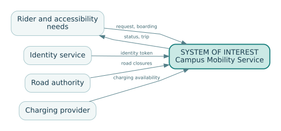

Chapter 1 — What, exactly, is the system?
Companion to EN.645.662, Week 1: systems, systems thinking, and the systems engineer.
A shuttle that works—and a service that fails
At 8:10 on a rainy morning, three autonomous shuttle vehicles are operational. Their batteries are charged; their self-diagnostics report no vehicle faults. A student opens the campus booking app, requests a ride, and waits. No shuttle appears. A dispatcher later discovers that the booking service has lost its connection to the fleet-management server. The vehicle supplier reports 100% fleet availability. The student reports a failed transport service. Both statements can be true.
This small contradiction is an entry point to systems engineering. A component can satisfy its specifications while the system fails to deliver its purpose. The student did not buy a vehicle subsystem; the student expected reliable transport from one place to another. The engineer must identify the object of accountability before judging whether its parts work.
A system is a set of interacting elements arranged to achieve a purpose within an environment. Those elements may include hardware, software, people, procedures, data, facilities, organizations, and policies. Calling something a system does not require that every element be designed by one contractor or controlled by one manager. What matters is the purposeful interaction and the whole-system behavior produced by that interaction.
An element is a part we choose not to decompose at the present level of description. A subsystem is a system that is itself part of a larger system. A vehicle is a subsystem of the campus mobility service and a system of interest for the vehicle designer. Neither label is absolute. It changes with the question we are trying to answer.
1.1 The system of interest is a decision
Suppose the campus asks: “Which new vehicles should we purchase?” A legitimate system of interest might be the autonomous vehicle, including its onboard sensors, computers, propulsion, braking, interfaces, and embedded safety behavior. Scheduling software and passenger service procedures are context or external dependencies. Now suppose the same campus asks: “How do we make evening travel accessible and dependable?” A vehicle-only boundary is inadequate; the relevant system of interest is the transportation service, including dispatch, operating policy, stops, service support, accessibility arrangements, and escalation processes.
A useful definition is therefore the system of interest is the thing whose behavior and responsibilities we are engineering or assessing for a specified decision. It is not simply the largest box on a diagram. The boundary allocates design authority, test responsibility, operational ownership, data obligations, and sustainment cost. An excluded element remains consequential if the mission depends on it. Moving mobile connectivity outside the contractual boundary does not make loss of connectivity cease to matter.
Consider two choices for our fictional Campus Shuttle Service:
| Question | Boundary A: vehicles and onboard control | Boundary B: end-to-end mobility service |
|---|---|---|
| Who engineers the booking app? | External campus IT | The service program or its subcontractor |
| Who defines service-level wait time? | External operator | Service system authority |
| What is verified at acceptance? | Vehicle functions and interfaces | Service functions, interfaces, and operating scenarios |
| Who owns a broken booking-to-dispatch handoff? | Shared interface issue | Program-level system defect, possibly with supplier action |
| What happens at retirement? | Vehicles are disposed of | Vehicles, customer data, operating processes, facilities, and service agreements are transitioned |
Neither choice is intrinsically superior. Boundary A might be appropriate for a procurement contract. Boundary B is more appropriate for evaluating the campus mobility mission. A mature engineering record states which decision justifies the selected boundary, and what residual dependencies remain.
The mechanism beneath the method
A system boundary determines which exchanges must be controlled and which outcomes must be negotiated with an environment; redraw the boundary and an apparent subsystem defect may become an external dependency.
Distinguishing related ideas
The boundary is not the physical perimeter: the shuttle's dispatch decision reaches into rider behavior, communications and agency rules even when those actors are not owned by the operator.
Interpretation and boundary conditions
An accountable design names every crossing, its owner, and what happens when an external participant does something other than the nominal scenario.
1.2 Draw the context before decomposing the design
A context diagram places the selected system of interest at the center and shows external actors or systems with meaningful exchanges. Unlike a product breakdown, it is not primarily a parts inventory. It is a map of interactions and dependencies.
flowchart LR
Rider[Passenger] -->|booking and accessibility needs| Shuttle[Campus Shuttle Service]
Shuttle -->|status, pickup, completed trip| Rider
IT[Campus identity service] <-->|authentication data| Shuttle
Weather[Weather service] -->|operating conditions| Shuttle
Safety[Campus safety office] <-->|hazard reports, emergency direction| Shuttle
Grid[Electric grid and charging provider] -->|energy and charging availability| Shuttle
Roads[Campus road authority] <-->|route restrictions and closures| Shuttle

This picture is deliberately incomplete: it tells us where interfaces exist, not whether we have specified them well. A credible diagram adds direction, exchanged item, owner, operational condition, and failure behavior to its interface register. A blank arrow labeled “data” is rarely sufficient. What data? In which units? With what timestamp? How late may it arrive? How can the recipient detect an invalid message?
For example, the fleet dispatcher sends a proposed route to a vehicle. A preliminary contract might specify vehicle_id, route_id, revision, created_at, valid_until, waypoint_sequence, acknowledgement_deadline, and a response code. A route whose validity interval has expired should not be accepted as a fresh command. The contract must also state the action taken after timeout or communication loss; it is not enough to say that the vehicle “shall be safe.”
1.3 Functions, structures, and outcomes are different views
A purpose explains why the system exists: enabling accessible and reliable movement between campus destinations. A function describes what it must accomplish: receive requests, select a feasible vehicle, arrange pickup, move passengers, handle exceptions, retain records. A physical architecture assigns those functions to equipment, software, people, facilities, or external suppliers. An operational outcome describes the value achieved: passengers reach their destination under the conditions that matter.
The same function can be allocated differently. A human dispatcher might assign vehicles; an automated service might do it; a hybrid operation might automate routine assignment while delegating exceptions to an operator. A premature boundary and architecture can eliminate options before we have compared them.
One useful discipline is to keep four questions separate:
- What outcome is needed, by whom, and under what circumstances?
- What functions must occur to produce that outcome?
- Which system elements and organizations are responsible for those functions?
- What evidence would show that the resulting arrangement works?
As the design matures, these questions become linked rather than collapsed into one vague box labeled “shuttle platform.”
1.4 Why interaction generates properties that cannot be tested in isolation
Whole-system properties can depend on interactions. Service waiting time depends on booking demand, the number of available vehicles, travel times, boarding delays, dispatch policy, road restrictions, and faults. Even when every vehicle meets its own acceptance test, a synchronized class change can produce a request surge, congest the dispatch queue, and cause unacceptable waits. The property emerges from the system in the plain engineering sense that it is not determined by any one part alone.
This is not mystical. Consider a simple capacity illustration. Suppose three vehicles can each complete four trips per hour in ideal conditions. A naïve total is 12 trips per hour. If peak demand is ten trips per hour, that seems ample. But a vehicle out for charging, longer accessible boarding, and vehicle clustering near one stop can lower effective capacity and increase delay. Worse, average hourly demand hides short bursts. A one-hour total cannot prove that a 15-minute surge will be served promptly.
An engineer therefore asks which system-level measures must be observed directly. “Vehicle available” is a subsystem measure. “Percentage of accepted requests resulting in completed trips” is closer to a mission-level outcome. Later chapters develop this distinction using measures of effectiveness and performance; here the key point is that subsystem success is necessary for some missions but usually not sufficient.
1.5 People, organizations, and lifecycle are engineering elements
A common modeling failure is to represent people as external noise. Passengers, maintenance technicians, supervisors, accessibility coordinators, emergency responders, vendors, and regulators can create, detect, or resolve system failures. An emergency response procedure may be as important as a sensor. The chosen boundary must make these dependencies visible, even when a particular organization is outside the program's direct authority.
Lifecycle thinking broadens the picture further. Development requires test facilities, simulation data, configuration management, and independent review. Deployment needs training and operating permits. Operation requires incident management, software updates, and spares. Retirement may require secure data disposal, vehicle decommissioning, and continuity of essential mobility services. An early architecture that is inexpensive to acquire but impossible to maintain is not an effective system architecture.
A supporting or enabling system makes the target service possible without necessarily being part of the delivered end product. A charging depot, maintenance diagnostic system, or training program may be enabling systems. The distinction matters for ownership and evidence, but it must never be used to omit a dependency.
1.6 Systems engineers integrate; they do not replace specialists
The project manager manages scope, schedule, cost, commitments, and decision processes. Specialists design particular elements and produce evidence within their disciplines. A systems engineer integrates needs, interfaces, performance, architecture, risks, and verification across those boundaries. These roles collaborate: resolving a technical trade may require schedule and funding changes; a schedule change may alter technical risks. The systems engineer is not automatically the sole decision authority. Effective governance specifies who recommends, who reviews, and who approves.
This integration role explains why a beginner must learn to ask better questions before reaching for a modeling tool. Does a drawing show passengers and maintenance procedures, or only expensive hardware? Has a boundary excluded a stakeholder whose objectives determine mission success? Is there an owner for every safety-relevant interface? Have the consequences of operating in degraded conditions been assigned and verified?
Deeper theory: system boundaries, service reliability, and accountable causation
Boundaries select the causes an engineer is willing to explain
A system boundary is more than a diagramming convention. It specifies which variables are modeled as endogenous (determined by relationships within the analysis) and which are treated as exogenous (imposed by the environment). If dispatch-server availability is regarded as external to the vehicle, a vehicle reliability assessment can be correct while remaining irrelevant to the transport service. Moving dispatch inside the system of interest changes the set of failures the design must explain, the observations it must collect, and the people able to authorize corrective action. This is a modeling decision with contractual and ethical consequences, not a discovery of a unique natural perimeter.
Boundary choice should follow the decision question. A component-design review legitimately narrows attention to propulsion, braking, and vehicle control. A service-acceptance review cannot exclude ticketing, accessibility support, communications, dispatch, and emergency recovery merely because different organizations own them. The appropriate decomposition is therefore question-dependent: boundary, purpose, environmental assumptions, and authority must be recorded together. A boundary that excludes an uncontrollable actor can still represent that actor's behavior through an interface and a stated assumption; exclusion never licenses omission of its effects.
Service reliability is a composition problem
Consider a trip that needs a booking transaction, dispatch decision, available vehicle, and completed pickup. Let events B, D, V, and P represent successful completion of those stages. The exact service success probability follows the probability chain rule:
P(success) = P(B) × P(D|B) × P(V|B,D) × P(P|B,D,V).
Multiplying four published component availabilities instead is justified only if they describe these precise events with compatible denominators and if the required independence assumptions hold. In practice, a network outage can simultaneously disable booking and dispatch; peak demand can impair allocation and pickup; a severe storm can affect communications and vehicle operation. Common-cause dependence is often the central system-level mechanism. Even a high product of nominal subsystem reliabilities may obscure passengers who cannot use the service at all.
Availability, reliability, and effectiveness also differ. Availability concerns readiness at an instant; reliability concerns accomplishing a defined mission over an interval; effectiveness includes whether the mission was worth accomplishing for the beneficiary. A fleet can have 99% vehicle availability while delivering much lower on-time, accessible trip completion. Every metric therefore needs a unit of analysis, observation window, population, and exception policy before it can support a claim.
Emergence can be investigated through interactions
An emergent property need not be mysterious. Queue growth, for example, arises when independently reasonable admission and dispatch rules interact through limited capacity. If requests enter at rate lambda and the system can sustainably complete mu requests per hour, a long-run queue will not stabilize when lambda >= mu, even if all software components pass their isolated functional tests. When lambda approaches mu from below, small variability can generate large waiting times. Understanding the emergent service failure requires observing how individual policies combine, not looking for a single defective component.
This viewpoint guards against two opposite mistakes: reducing every failure to a broken part, and invoking “complexity” as an excuse not to investigate. A credible causal explanation identifies interactions, feedback, constraints, and evidence that could distinguish competing hypotheses. For the shuttle, a time-aligned record of arrivals, accepted bookings, dispatch latency, trips served, cancellations, and weather could separate an admission-control failure from a vehicle-capacity limit.
The boundary must support a defensible intervention
The final systems-engineering question is not only what caused the observed outcome but what change can alter it. If the campus cannot modify a vendor dispatch algorithm, it may nevertheless renegotiate an interface service level, design a manual fallback, adjust peak-hour admission policy, or redefine operational responsibilities. These interventions lie at different levels of the sociotechnical system and carry different verification burdens. One should not claim that fixing a vehicle component repairs an end-to-end service unless the causal path from intervention to service outcome has been demonstrated. The boundary is adequate when it lets the decision maker see the relevant failure mechanisms, feasible controls, and residual uncertainty.
1.7 Worked design review: two boundary options
The campus is considering an initial 90-day pilot with three vehicles, six stops, and one operator. You have two proposals. Proposal A purchases the vehicles and delegates dispatch to an existing campus service. Proposal B contracts a full mobility service, including dispatch and operational support. The numbers that follow are invented teaching assumptions, not vendor estimates.
Assume Proposal A costs $420,000 initially and Proposal B costs $510,000. A simplistic evaluation favors A. But the campus expects to spend $90,000 connecting the legacy dispatcher, $35,000 training operators, and $50,000 on a separate support agreement if it selects A. Its integrated planning cost becomes $595,000, subject to overlap and uncertainty. Proposal B may still need campus-side costs: identity integration $20,000 and oversight $15,000, yielding $545,000. This does not establish that B is better: it only demonstrates why comparing different boundaries using headline prices is invalid.
The proper next step is to define common scope and performance assumptions; document cost exclusions, interface risks, and lifecycle obligations; and compare options under equivalent mission needs. This is a boundary-normalization exercise, not yet a detailed cost estimate or trade study.
Review finding: Proposal A names no owner for communications-loss behavior. Its vehicles can report “nominal” while the service stops. The issue is not solved by adding a box labeled “network”; a specific responsible organization must supply an interface contract, degraded-mode procedure, test, and support commitment.
1.8 A practical boundary decision record
A useful record contains the decision question; boundary A and B; included and external elements; principal interfaces; retained dependencies; affected stakeholders; lifecycle consequences; evidence gaps; recommended boundary; accepting authority; and date/baseline. Treat the record as a controlled hypothesis. A later change in mission scope may justify changing the boundary, with corresponding updates to requirements, architecture, contracts, and verification.
Avoid two opposite errors. The first is declaring everything inside the boundary, creating an unmanageable contract with no meaningful interface ownership. The second is defining a narrow boundary to make the project appear easy while leaving critical mission dependencies unowned. The goal is accountable, reviewable scope—not maximal scope.
1.9 Check your understanding
Try these before opening the solutions.
Question A. A charging station is operated by an external company. Does that mean it can be removed from the context diagram? Explain which obligations remain.
Question B. Write a precise boundary statement for a campus pilot whose acceptance decision concerns service reliability, not vehicle procurement. Identify one external dependency.
Question C. Distinguish a system context diagram from a component hierarchy and describe one situation where each would be useful.
Question D. If the fleet has 100% vehicle uptime but riders complete only 70% of requested trips, is there a contradiction? What additional evidence would you request?
<details><summary>Worked solutions</summary>
A. No. Ownership and system boundary are separate from mission relevance. The station remains an external element whose energy, availability, access, maintenance, and failure behavior must be represented as interfaces or assumptions.
B. Example: “The system of interest is the campus-operated mobility service from accepted ride request through safe passenger drop-off, including booking, dispatch, vehicles, stops, and operator procedures; it excludes the public electric grid but includes the charging availability interface and contingency arrangements.” Alternative rationales are acceptable if responsibility is explicit.
C. A context diagram shows actors, external systems, and exchanges across the chosen boundary; a hierarchy shows system-to-subsystem composition. Context is useful for identifying external obligations; hierarchy is useful for decomposing design responsibility.
D. No contradiction: component availability and trip-completion effectiveness measure different things. Request transaction logs, demand by period, cancellations, coverage, dispatch faults, accessibility failures, and operating-domain exceptions, with definitions and denominators.
</details>
1.10 Put the chapter to work
Complete Hypothetical Lab 1: The Boundary Hearing. Then use the original Week 1 assignment and rubric to produce 662_W01_SystemFraming_v1.0. The hypothetical lab is practice, not a substitute for the course deliverable.
Continue with: Chapter 2 — Life cycles are evidence strategies. Related advanced reference: Mission to assurance.